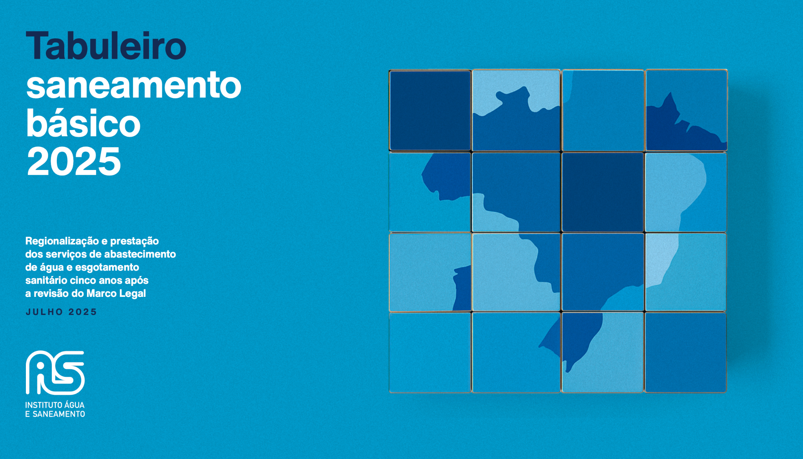
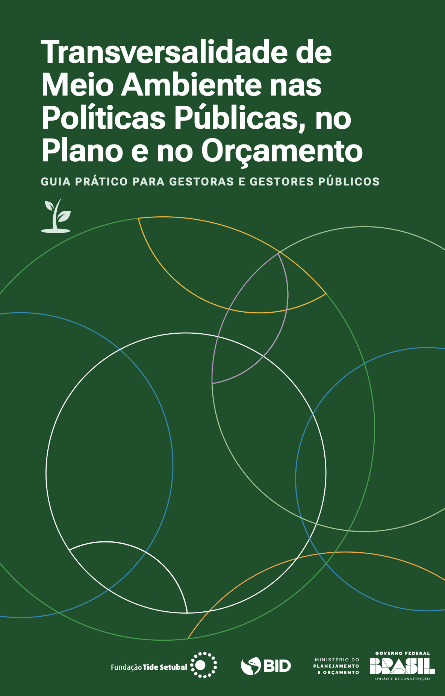
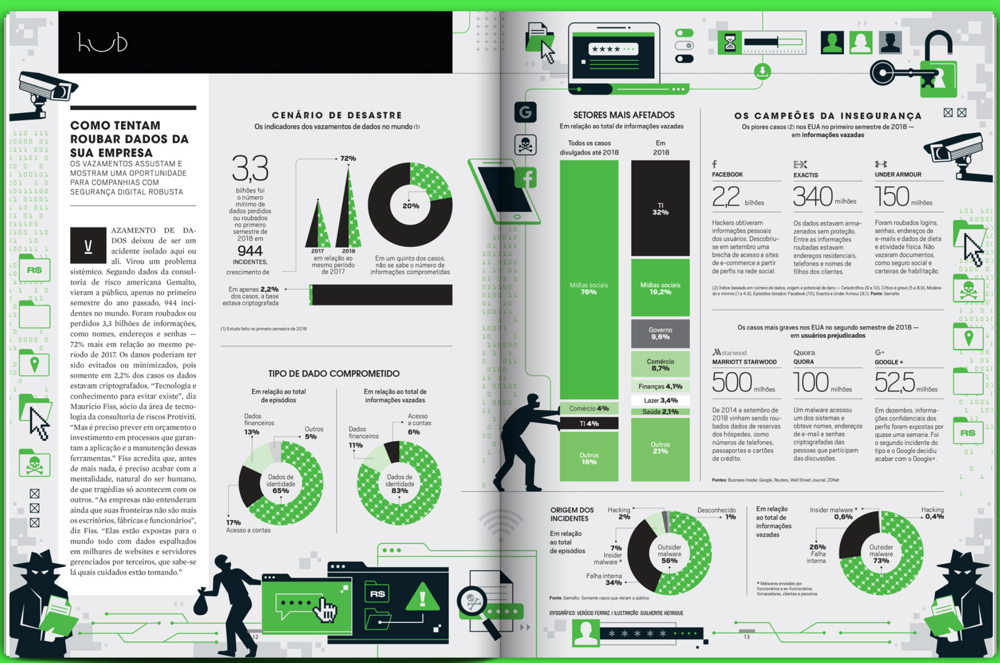
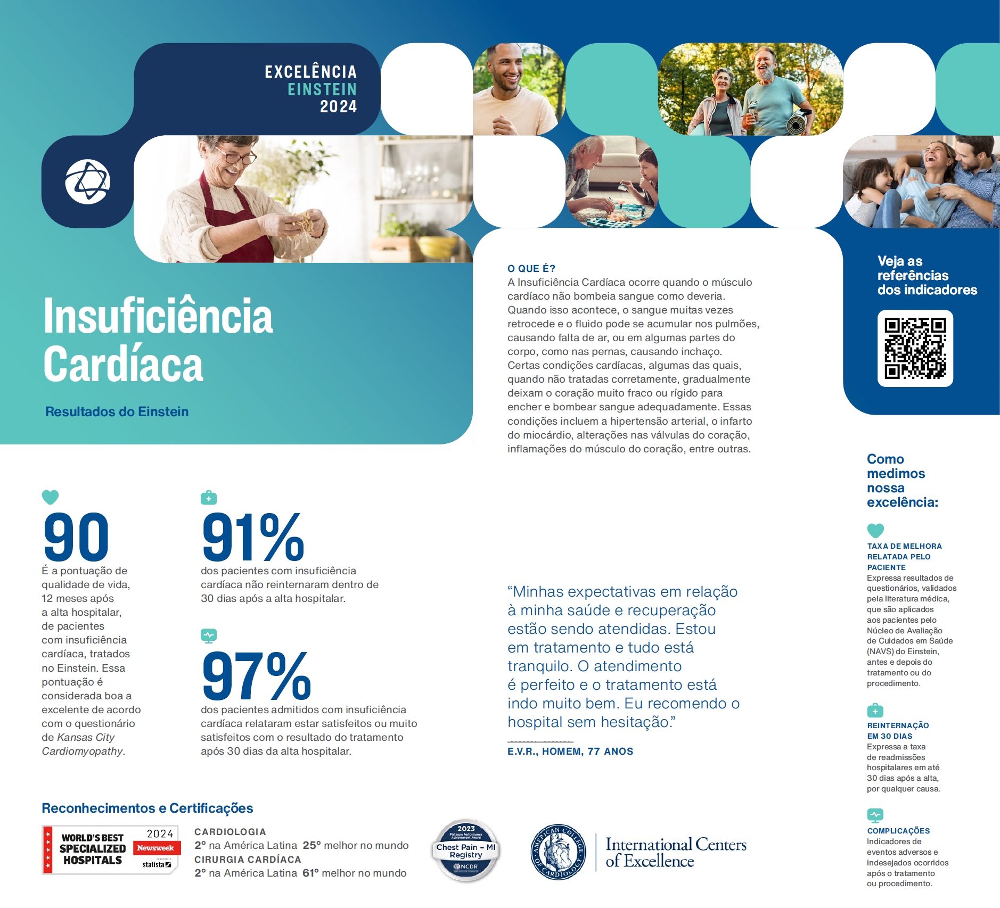
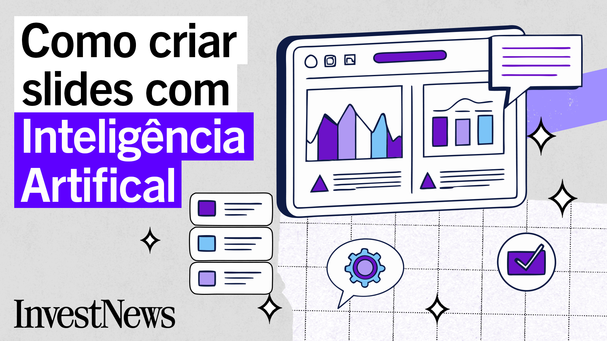
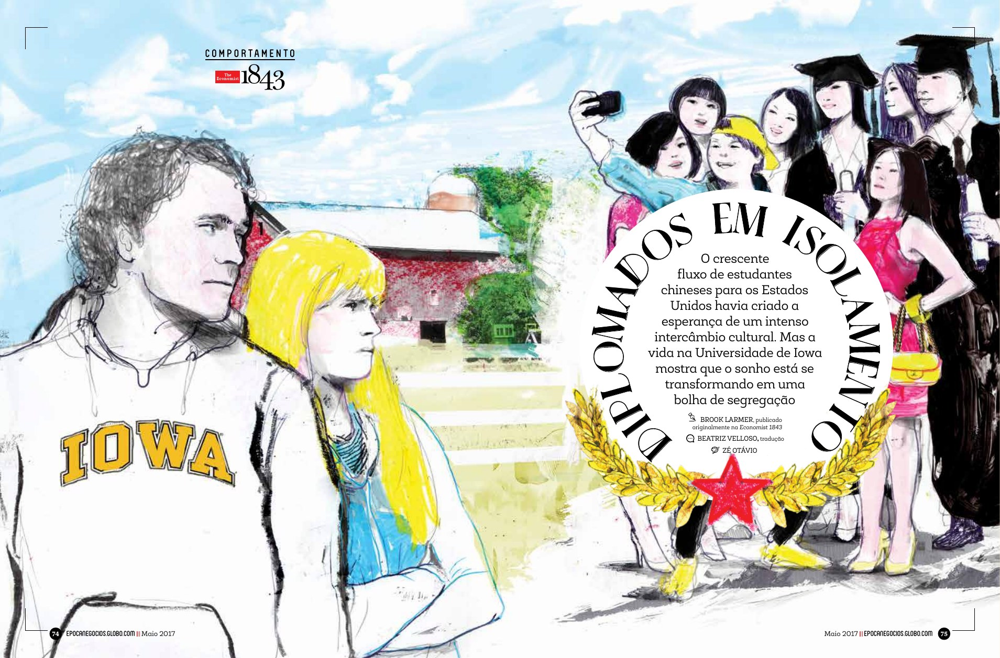
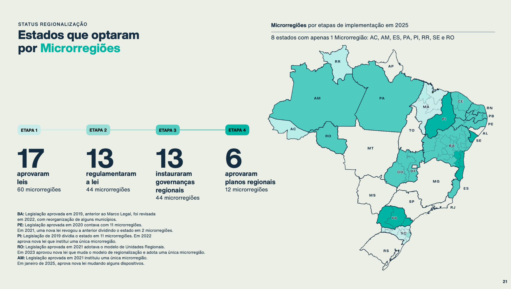
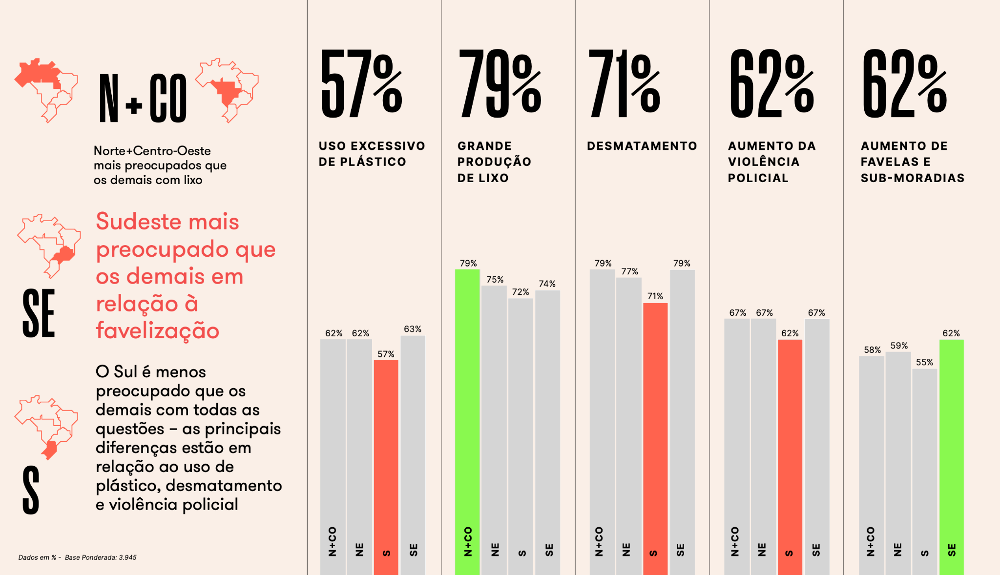
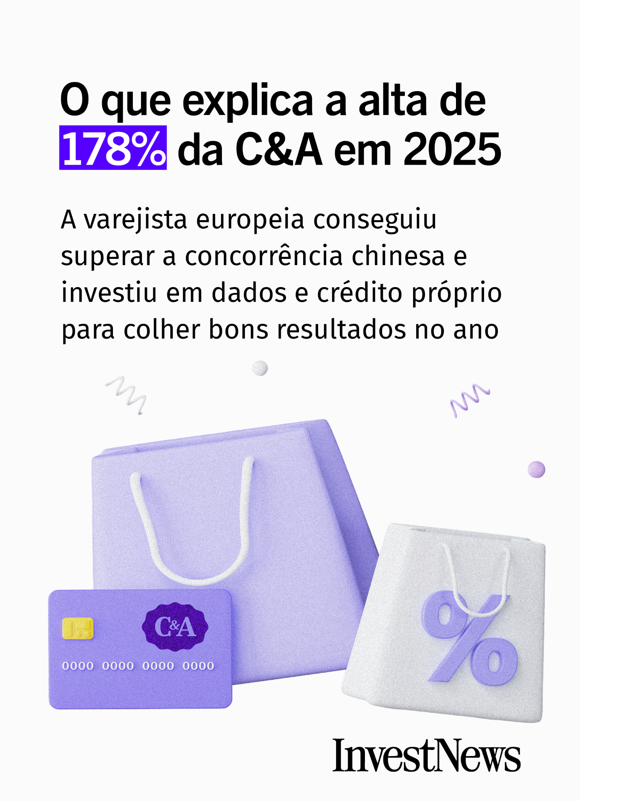
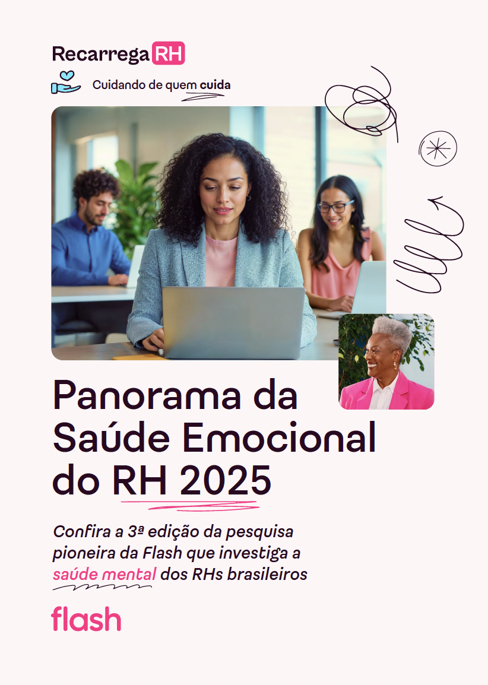

Graphic Designer · Art Director · Illustrator
Design editorial,
dados e narrativas
visuais.
Projetos editoriais, relatórios, infografia, apresentações e comunicação visual.
Selected Work ↓






01 / Selected case
Tabuleiro do
Saneamento Básico
Projeto editorial e visualização de dados para publicação sobre regionalização e prestação dos serviços de saneamento básico.


02 / Selected case
Research
HR
Relatório com pesquisa, hierarquia editorial, gráficos, mapas e visualização de dados.
03 / Editorial + Infographics
Época
Negócios
Colaboração editorial para a revista Época Negócios, envolvendo edição, design e desenvolvimento visual das matérias. Direção de arte e pauta de ilustração para colaboradores, entre eles o ilustrador Zé Otávio.
04 / Digital
InvestNews
Conteúdo visual para ambiente digital, combinando tipografia, ilustração, colagem e informação financeira.



About
Verucio Ferraz é designer gráfico, art director e illustrator.
Designer gráfico com 20 anos de experiência em design editorial, direção de arte e narrativas visuais. Trabalhou em publicações das editoras Abril e Globo, desenvolvendo projetos para revistas, relatórios, infografia, visualização de dados, apresentações, comunicação institucional e conteúdo digital.
Ao longo da carreira, desenvolveu projetos para publicações, organizações e marcas, articulando conteúdo, tipografia, imagem e informação — da concepção e direção de colaboradores à finalização gráfica e digital.